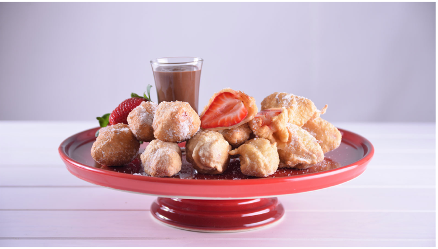

Postres Españoles
Los mejores postres
Favoritos:

Historial:
TORRIJAS
18 De Junio de 2019
Las Torrijas, también conocidas como Torrejas o Tostadas, son un postre típico de Cuaresma o Semana Santa. Es una receta que no solo se elabora en España, también se prepara en América del Sur, Centroamérica y México

CREMA CATALANA
18 De Junio de 2019
Este dulce típico de la gastronomía española, concretamente de la cocina catalana, también se conoce como Crema quemada. Se trata de una crema pastelera con base en yema de huevo que suele cubrirse con una capa de azúcar caramelizad